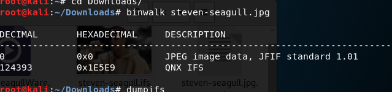
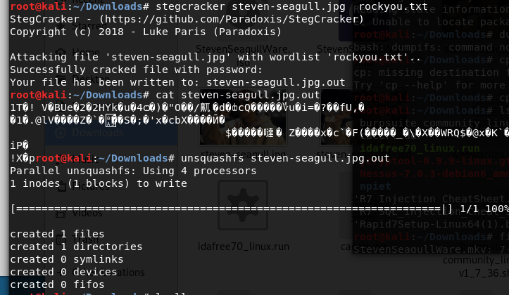
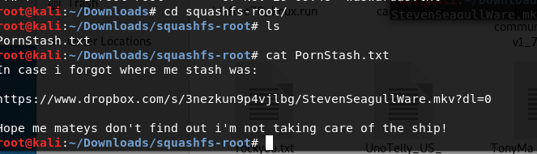
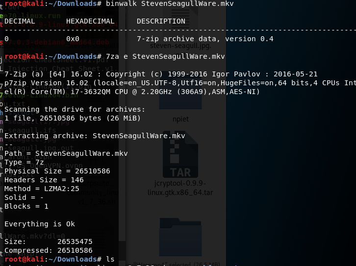
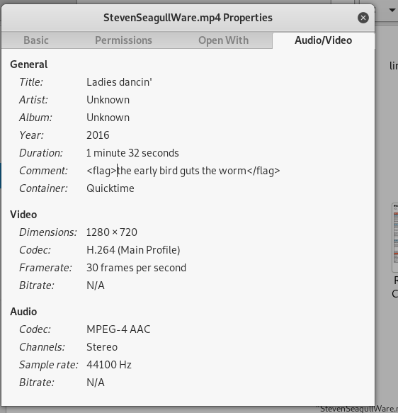
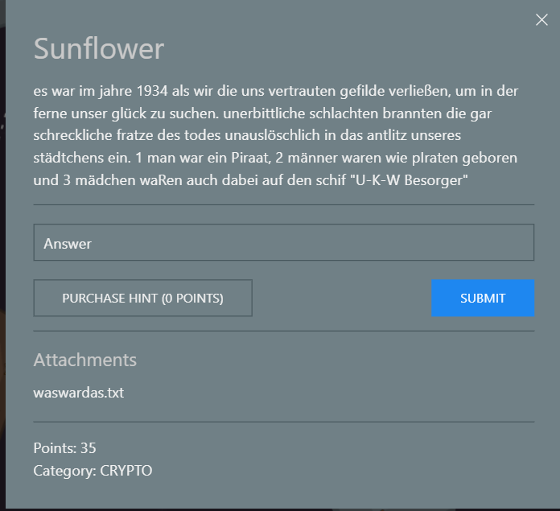
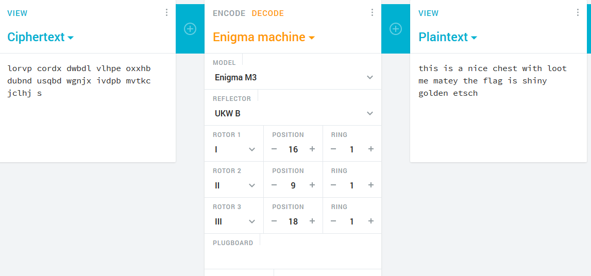

Student engagement
Lees meerIn het begin van het 3e jaar van mijn opleiding toegepaste informatica op de PXL begon er zich een interesse te ontwikkelen voor cyber security. Daarom schreef ik mij in voor de Hack The Future Challenge samen met Joren Knieper. Als aanvulling op de innovatieroute in de security die wij aangeboden kregen als deel van het vak iTalent, wilden wij deze kennis die we hier hadden opgedaan testen tijdens een security challenge.
Tijdens dag 2 van het event vond de security challenge plaats op donderdag 29/11/18 (aka Hackerday). Joren en ik waren al heel vroeg vertrokken om op tijd aan te komen in Fort-V in Edegem, waar het event plaats vond. Bij onze aankomst werden we hartelijk ontvangen en kregen we een T-shirt in het thema van de wedstrijd. Na een toespraak van de organisatie werden we in groepen ingedeeld en begeleid naar de locatie waar onze challenge doorging. Daar werd een korte introductie gegeven hoe onze dag ging verlopen (voor de security challenge) en mochten we beginnen aan onze opgaves. We kregen toegang tot een platform in piratenthema met de opdrachten verspreid over verschillende eilandjes.
Deze wedstrijd was gebaseerd op het Capture the flag principe. Dit wil zeggen dat er gezocht moet worden naar een flag verstopt in de opgaves. Er waren opdrachten uit verschillende domeinen. Deze varieerden van een simpele vraag van wat het 508304de nummer van PI was (wat uiteraard gewoon te vinden is via een simpele zoekopdracht op google) tot moeilijkere cryptografische vraagstukken en webchallenges.
Enkele voorbeelden van de challenges:
We kregen een afbeelding waar een verborgen boodschap achter zat. Deze hebben we in verschillende stappen moeten ontcijferen. Eerst hebben we met de stegcracker tool een hidden file extract. Daarna hebben we deze unsquashfs ontcijferd. De boodschap die we hieruit vonden, was een link naar een dropbox folder online. Hierin zat een filmpje. In de metadata van dat filmpje konden we dan de flag vinden.
    Dit vonden we een hele leuke opgave omdat deze te maken had met encryptie methodes die gebruikt werd ten tijde van de 2e wereldoorlog, namelijk de Enigma machine.
Uit de opgave moesten we dan afleiden welke reflector we moesten gebruiken en welke rotor op welke positie stond om de opgave (waswardas.txt) te kunnen ontcijferen. Eenmaal we dit hadden gevonden was het gewoon een kwestie van deze informatie in te geven in een online tool om het te ontcijferen.
Aan het einde van de wedstrijd werd er verwacht dat wij onze bevindingen konden presenteren voor een jury. In 5 minuten moesten we een korte pitch geven over wie we waren, over hoe de challenge voor ons verlopen was, onze favoriete opgave uitlichten en hoe we deze hadden opgelost. Als laatste moesten we een idee bedenken hoe we het platform konden uitbreiden en of eventueel konden commercialiseren. Deze pitch werd samen in rekening gebracht voor de uiteindelijke puntentelling. Zo zijn we uiteindelijk op een verdienstelijke 3de plaats geëindigd. Op het einde van de dag werden we nog op frieten getrakteerd en mochten we onze prijs in ontvangst nemen. Daarna hebben we nog even na gepraat met de organisatoren van onze challenge van het bedrijf Nynox waarna we terug huiswaarts zijn gekeerd.
Nog een leuke anekdote uit onze wedstrijd was dat we een challenge kapot hadden gemaakt, of althans dat wilden de organisatoren ons wijsmaken. Ze zagen natuurlijk dat wij een XSS attack op de website wilden proberen, maar dit lukte echter niet omdat de webserver deze niet aankon. Achteraf hebben ze ons uitgelegd dat dit wel de juiste aanpak was om de flag te vinden en hebben we hier nog een extra punt voor gekregen omdat de site niet werkte.
Deze opdracht was een zeer leuke aanvulling op het innovatie traject van de PXL dat onderdeel uitmaakt van het vak iTalent. Samen met Joren hebben wij onze skills kunnen testen op verschillende gebieden van de Security. Dit was voor ons de eerste keer dat we meededen aan zo een wedstrijd en we hadden meteen de 3e plaats te pakken.
Onze aanpak voor de wedstrijd was in het begin zeer duidelijk, we focusten ons elk op onze eigen challenge en probeerden er zo elk zoveel mogelijk op te lossen. Als we dan zelf niet meer verder konden, schoten we elkaar te hulp. In het begin liep dit zeer vlot. We konden elkaar zeer goed aan vullen doorheen de verschillende domeinen. Joren zijn sterkte waren de webchallenges, mijn sterkte waren de cryptografische challenges. Na verloop van tijd hadden we de meeste opgaves die we konden oplossen opgelost en waren alleen nog de moeilijkere uitdagingen over. Hiervoor probeerden we steeds out of the box the denken en niet de hele tijd terug te vallen op onze gebruikelijke denkwijze. Door deze strategie toe te passen hebben we dan nog 1 moeilijke opdracht kunnen oplossen.
De deelname aan deze wedstrijd was een zeer leuke ervaring, zowel voor de dingen die we hebben bijgeleerd als ons plezier tijdens de wedstrijd. Het behalen van een 3e plaats was dan ook een mooie kers op de taart. Ook hebben we tijdens en na het evenement kunnen netwerken met verschillende mensen uit de securitysector. Dit gaf ons mooie uitgangspositie om een stage te zoeken. We keken al dadelijk uit om mee te doen met de volgende security challenge.